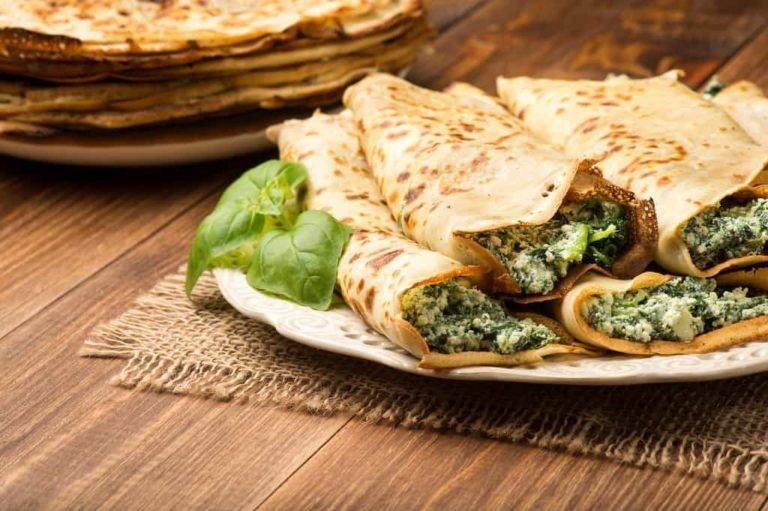

Massas
Crepes de ricota

Ingredientes
- Massa: 1 xícara de farinha de trigo
- 1 colher (sopa) de manteiga derretida fria
- 2 ovos tipo extra
- 1 xícara de leite
- Sal e pimenta-do-reino a gosto
- Recheio: 800 g de ricota
- 1 xícara de espinafre cozido, escorrido e picado
- 1 ovo
- 4 gemas
- 1 xícara de parmesão
- 4 colheres (sopa) de manteiga
- 1 colher (chá) de noz-moscada
Modo de preparo
- Prepare a massa: peneire a farinha numa tigela, formando um monte. Faça um buraco no centro do monte e coloque aí a manteiga. Misture.
- Acrescente os ovos e misture juntando o leite, aos poucos. Tempere com sal e pimenta, e misture bem até obter uma massa homogênea.
- Cubra a tigela e deixe a massa descansar por 1 hora.
- Aqueça uma frigideira antiaderente de 20 cm de diâmetro levemente untada com óleo. Despeje 3 colheres (sopa) de massa, espalhando-a para cobrir o fundo da frigideira. Frite os crepes em fogo brando.
- Quando a parte de baixo do crepe dourar, vire-o do outro lado com o auxílio de uma espátula e deixe dourar. Retire do fogo e coloque em um prato. Repita a operação até terminar a massa, empilhando os crepes e intercalando com papel-manteiga.
- Prepare o recheio: peneire a ricota, deixando-a cair em uma tigela. Adicione os ingredientes restantes e misture bem. Tempere a gosto, cubra e leve à geladeira por 30 minutos.
- Espalhe o recheio de ricota sobre os crepes e enrole. Vá arrumando os crepes recheados em uma fôrma untada com manteiga. Congele.
Observação
Os ovos tipo extra são os de maior tamanho disponíveis no mercado; se for utilizar ovos menores, será necessário um ou mais ovos, dependendo do tamanho. Congelamento: cubra a fôrma com os crepes com filme plástico ou coloque em um saco plástico que feche hermeticamente; etiquete e congele. Descongelamento: retire os crepes do freezer e cubra com Molho de tomate (veja a ficha) e queijo parmesão ralado. Descongele em temperatura ambiente, ou leve ao micro-ondas, ou ao forno em temperatura baixa para descongelar e gratinar.